Le fait que la visite d’un hôtel fasse partie des attractions touristiques incontournables de Dubaï peut peut-être sembler étrange… Cependant, le Burj Al Arab n’est pas n’importe quel hôtel. Les clients n'ont que l'embarras du choix entre un restaurant sous-marin et aquarium, une flotte de voitures Rolls-Royce les attendant sur le parvis de l'hôtel et le célèbre héliport qui a entre autres accueilli Tiger Woods, Anthony Joshua ou encore Roger Federer.
La terrasse Burj Al Arab offre quant à elle 10 000 m² d'espace extérieur pour se prélasser au bord de la piscine. Cette zone ensoleillée s'étend à 100 mètres de la base de l'hôtel, permettant aux clients de se détendre au bord de l'eau.
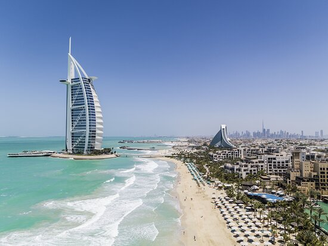 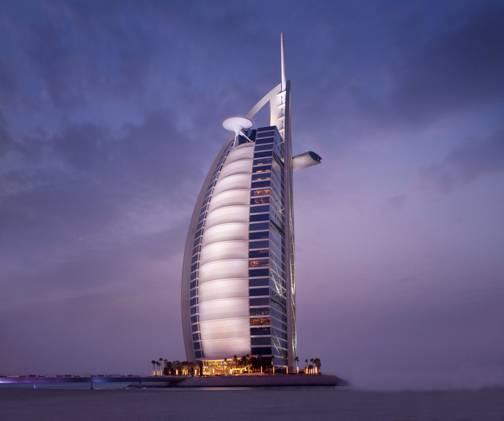 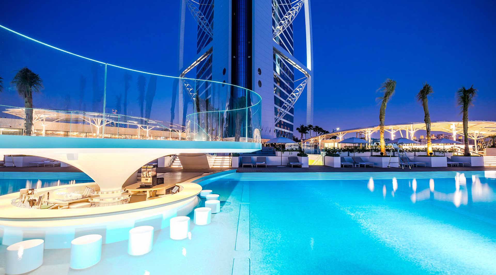 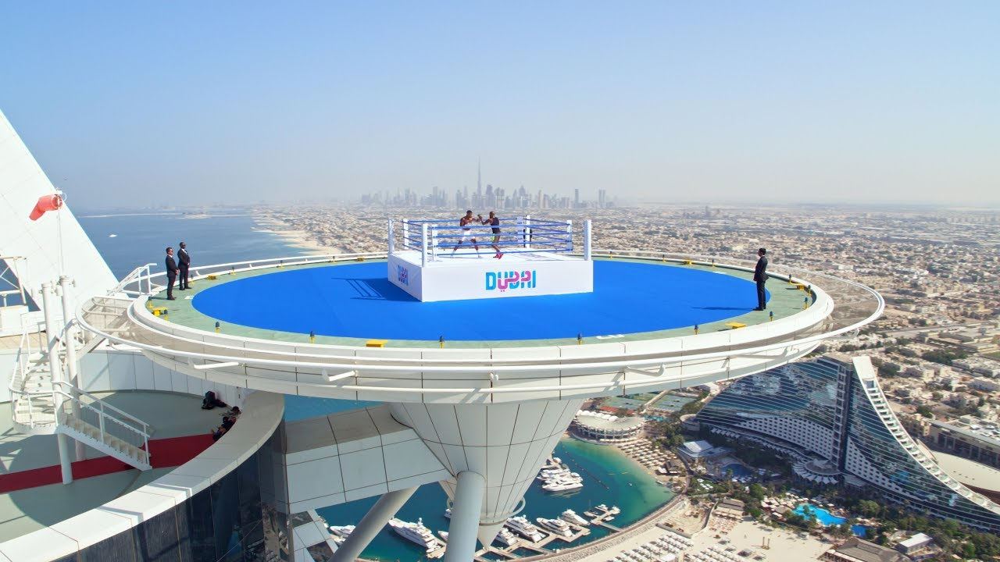 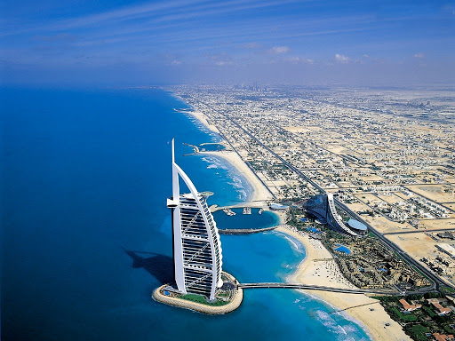Pour pouvoir visiter l’hôtel et admirer ses fontaines, ses boutiques et son impressionnant vestibule (le lobby est le plus haut du monde avec plus de 200 mètres de haut), il faut réaliser une réservation dans l’un de ses bars ou restaurants.
Tripadvisor Burj Al Arab Jumeirah est l'un des monuments et sites touristiques les plus célèbres de Dubai. Cet hôtel de luxe dispose de plusieurs restaurants gastronomiques, de plages incroyables, d'une vaste terrasse et compte des personnalités et célébrités du monde entier parmi sa clientèle.
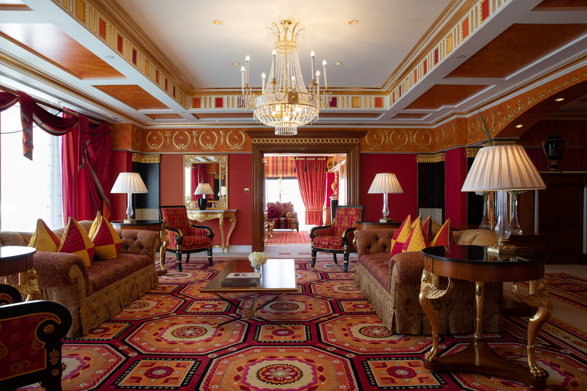 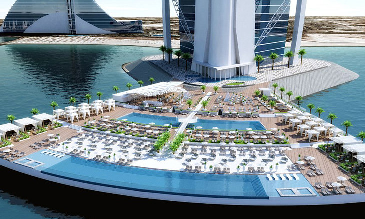 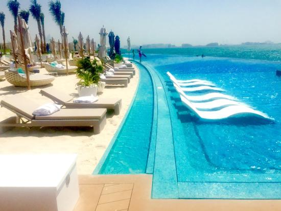 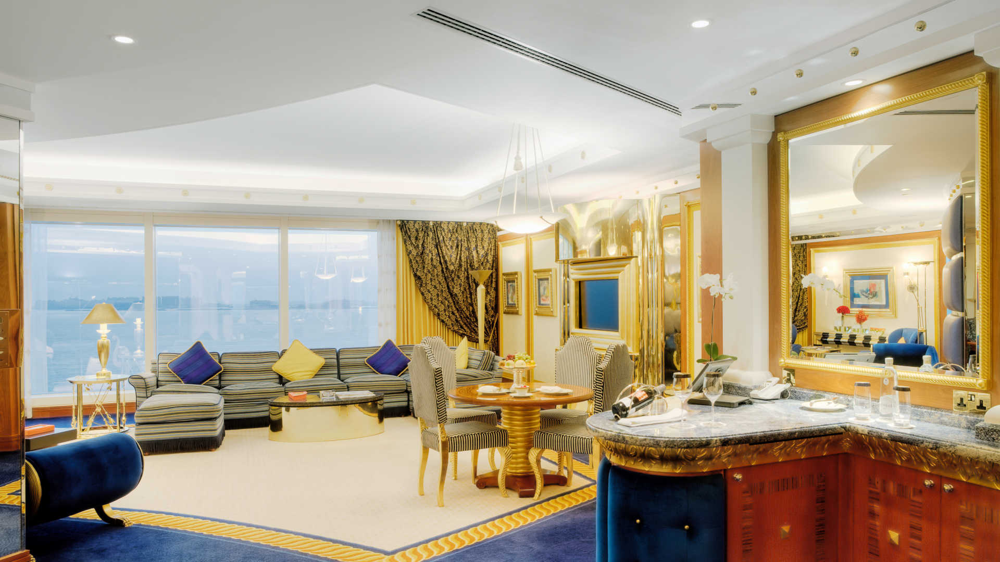 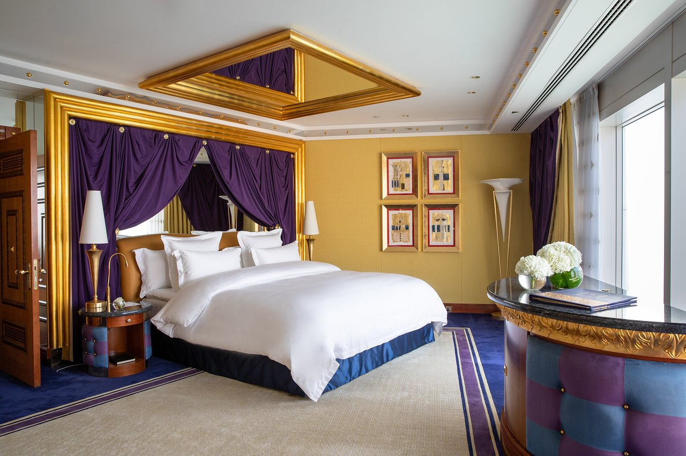Depuis son ouverture en 1999, le bâtiment en forme de voile a contribué à placer Dubai sur la carte mondiale du tourisme de luxe. Construit sur sa propre île, sa structure unique s'élève à 321 m, offrant aux clients une vue imprenable sur le golfe Persique depuis leur chambre d'hôtel.
Avec des intérieurs dorés, ses somptueuses suites et certains des meilleurs restaurants de Dubai, il n'est pas surprenant que le Burj Al Arab soit considéré comme l'un des meilleurs établissements cinq étoiles où séjourner à Dubai. Il est d'ailleurs souvent considéré comme un hôtel « sept étoiles ». Les clients n'ont que l'embarras du choix entre un restaurant sous-marin et aquarium, une flotte de voitures Rolls-Royce les attendant sur le parvis de l'hôtel et le célèbre héliport qui a entre autres accueilli Tiger Woods,
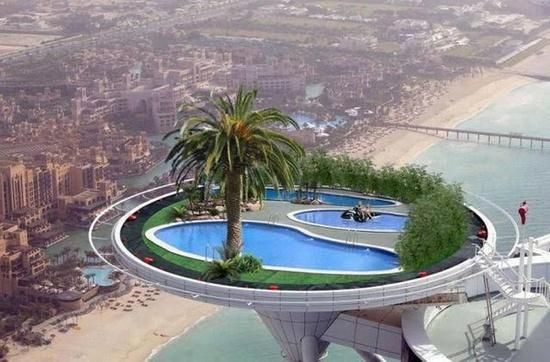 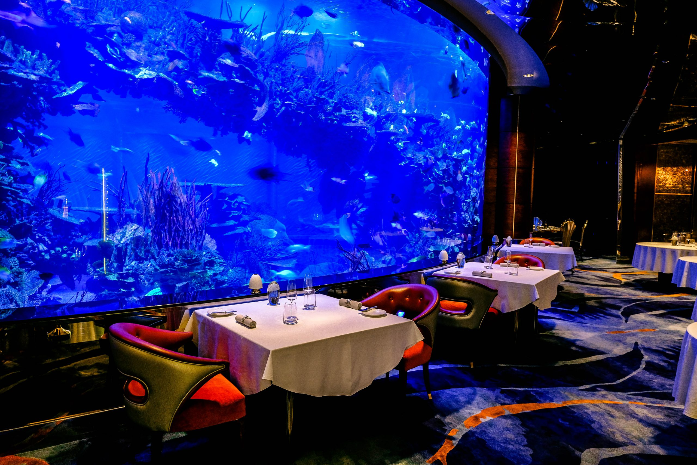 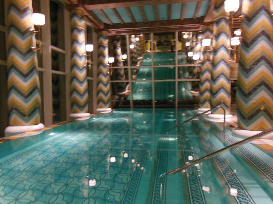 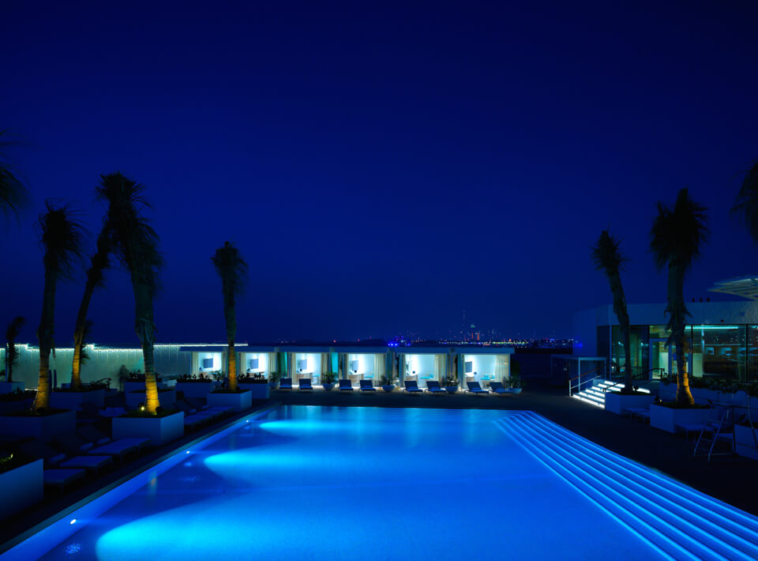 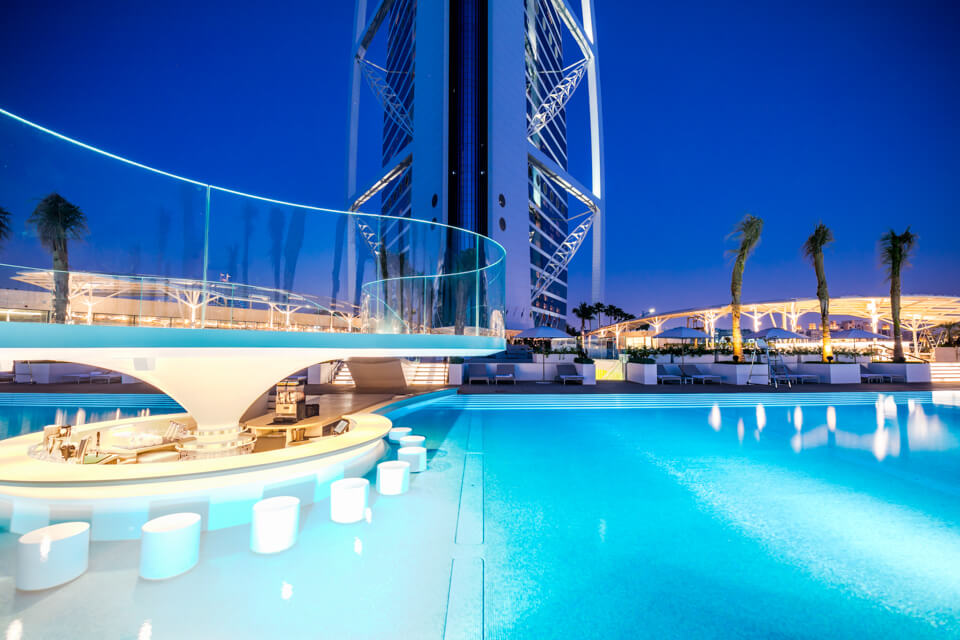Anthony Joshua ou encore Roger Federer. La terrasse Burj Al Arab offre quant à elle 10 000 m² d'espace extérieur pour se prélasser au bord de la piscine. Cette zone ensoleillée s'étend à 100 mètres de la base de l'hôtel, permettant aux clients de se détendre au bord de l'eau.